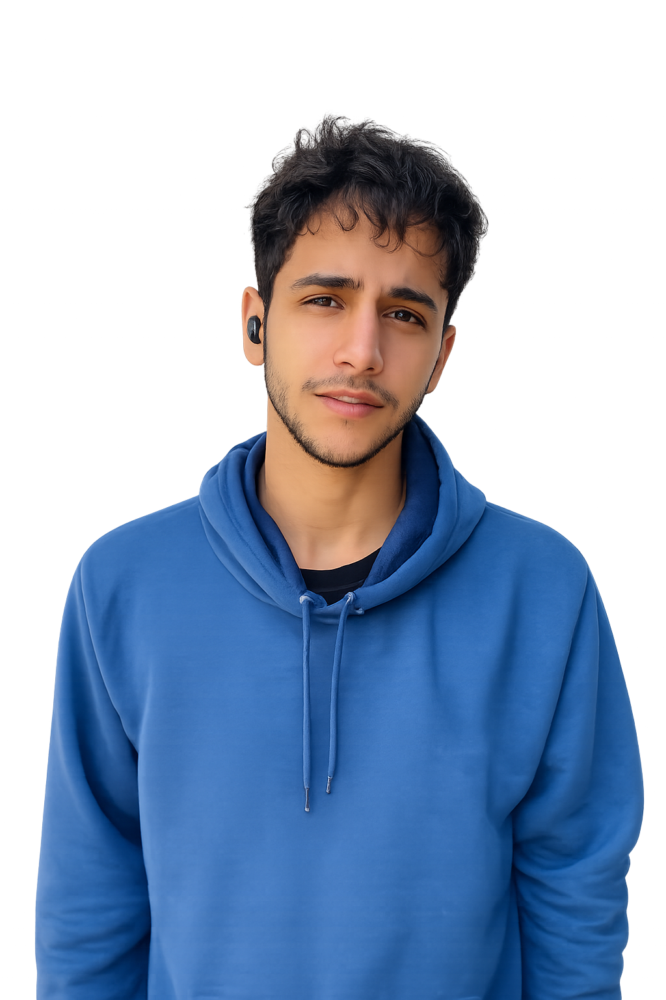

Profissional com experiência administrativa na área pública, atuação em Vigilância Sanitária, suporte técnico, atendimento ao público, organização documental e sistemas administrativos institucionais. Possuo conhecimentos em tecnologia, desenvolvimento web e ferramentas digitais.
Meu nome é Thiago Mikis Oliveira dos Santos. Tenho experiência na área administrativa atuando junto à Secretaria Estadual de Saúde e Agência Pernambucana de Vigilância Sanitária (APEVISA).
Durante minha atuação desenvolvi habilidades em organização, atendimento ao público, elaboração de documentos, suporte técnico-administrativo e rotinas internas.
Busco oportunidades para continuar evoluindo profissionalmente, contribuindo com dedicação, responsabilidade e aprendizado contínuo.
Apto a exercer atividades nas mais diversas áreas, visando obter resultados que colaborem com o atendimento das necessidades existentes dentro de uma organização, contribuindo com responsabilidade, dedicação e evolução profissional.
Histórico profissional e atuação administrativa.
Instituição: SES / I GERES / APEVISA
Período: 08/06/2015 até 31/10/2016 — 1 ano e 5 meses
Local: 1ª Unidade Regional de Saúde - SES/PE - Agência Pernambucana de Vigilância Sanitária
Confecção de talonários, abertura de denúncias, entrada de PGRSS, elaboração de apresentações sobre VISA, relatórios das atividades desenvolvidas, apoio às atividades da Coordenação e Servidores, auxiliando a realização de cronogramas de inspeção, abertura de processos, avaliação de desempenho, planejamento anual e relatórios técnicos de inspeção. Atendimento telefônico ao setor regulado; digitação, análise, conferência, arquivamento e protocolo de documentos; recebimento de correspondências.
Instituição: Secretaria de Saúde de Pernambuco - SES-PE/I GERES/APEVISA
Período: 01/11/2016 até 31/12/2016 — 176 horas
Local: 1ª Unidade Regional de Saúde - SES/PE - Agência Pernambucana de Vigilância Sanitária
Confecção de talonários, abertura de denúncias, entrada de PGRSS, elaboração de apresentações, relatórios técnicos, apoio administrativo e auxílio às coordenações internas. Tramitação de documentos no SIGEPE, digitalização e arquivamento documental, suporte em compras institucionais, atendimento ao público e telefônico, digitação de textos e planilhas.
Instituição: SES / I GERES / APEVISA
Período: 08/06/2015 até 31/10/2016 — 1048 horas
Local: 1ª Unidade Regional de Saúde - SES/PE - Agência Pernambucana de Vigilância Sanitária
Elaboração de apresentações sobre VISA, relatórios das atividades desenvolvidas, apoio às coordenações, cronogramas de inspeção, abertura de processos e planejamento anual. Tramitação documental no SIGEPE, digitalização e arquivamento, suporte ao atendimento público, atendimento telefônico, digitação de textos e planilhas.
Instituição: Agência Pernambucana de Vigilância Sanitária - APEVISA
Período: 18/09/2023 até 31/12/2023 — 300 horas
Local: Secretaria de Saúde de Pernambuco
Suporte à coordenação e técnicos na alimentação do Sistema Estadual de Informações em Vigilância Sanitária (SEVISA), monitoramento do Sistema Eletrônico de Informação (SEI) e acompanhamento de peticionamentos eletrônicos. Apoio ao recebimento e entrega de documentos, digitalização, arquivamento, atendimento ao público, atendimento telefônico e digitação de textos e planilhas.
Instituição: Agência Pernambucana de Vigilância Sanitária - APEVISA
Período: 01/02/2024 até 23/05/2024 — 324 horas
Local: Secretaria de Saúde de Pernambuco
Alimentação do sistema SEVISA, monitoramento do SEI, acompanhamento de solicitações institucionais, apoio técnico-administrativo e suporte às coordenações. Digitalização e arquivamento documental, atendimento ao público e telefônico, digitação de textos, planilhas e suporte operacional interno.
Instituição: Agência Pernambucana de Vigilância Sanitária - APEVISA
Período: 08/2024 até 10/2024 — 3 meses
Local: Secretaria de Saúde de Pernambuco
Apoio técnico no Sistema Estadual de Informações em Vigilância Sanitária (SEVISA), monitoramento do Sistema Eletrônico de Informação (SEI) e acompanhamento de canais institucionais. Auxílio em digitalização, arquivamento de documentos, atendimento ao público, atendimento telefônico, textos, planilhas e suporte administrativo.
Formação educacional e graduação.
EREM Francisco de Paula Corrêa de Araújo
Bacharelado em Nutrição - Universidade Federal de Pernambuco — UFPE / Centro de Ciências da Saúde
Competências profissionais, administrativas e técnicas.